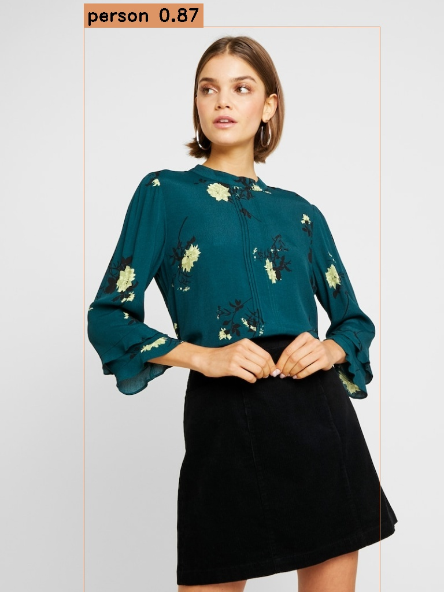
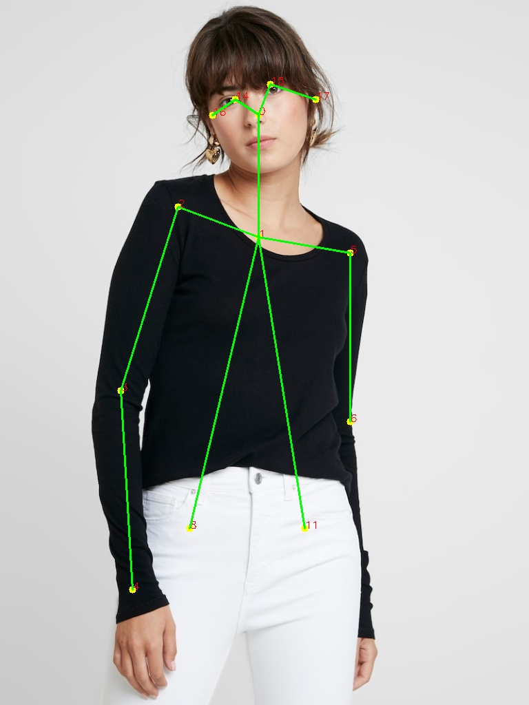

Optimized human detection and pose estimation in C++ using ONNX and OpenCV
Converted Python-based AI models to high-performance C++ implementations.

YOLOv8n model converted to ONNX format and implemented in C++ using OpenCV's DNN module.
View Detection Code
COCO-based OpenPose implementation using OpenCV's DNN module.
View Pose CodeDemonstrates strong cross-language AI implementation skills and performance optimization